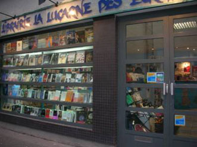
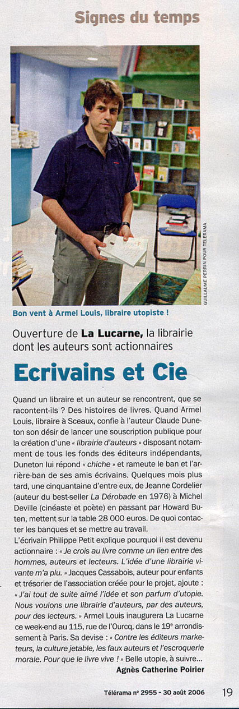
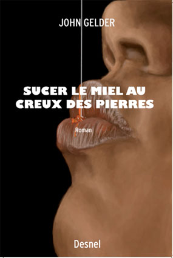

Une librairie "totale" à Paris
(où vous trouverez - parmi bien d'autres éditeurs - le fonds des éditions PARC*)
 115, rue de l'Ourcq, 75019 ParisLa lucarne des écrivains vous ouvre ses portes et vous
propose des soirées littéraires pour mettre en
lumière et découvrir des auteurs et des éditeurs
rares. Elle offre des tarifs privilégiés pour les
enseignants mais au-delà de cette ristourne, il s’agit
avant tout d’un engagement culturel. Militer pour résister
au monopole des grandes surfaces où les 4/5 des achats de livres
se font. Actuellement, la création littéraire est mise
à mal car elle est devenue une marchandise comme une autre.
Acheter dans une librairie associative est une action
pour la sauvegarde d’une qualité, diversité,
pérennité des auteurs et des éditeurs.

Librairie : La Lucarne des Écrivains, 115, rue de L'Ourcq - 75019 Paris
Tél/Fax : 01 40 05 91 29/51 - M° Crimée
pour vous tenir au courant des activités de La Lucarne (soirées, animations) consultez :
à : http://lucarnedesecrivains.free.fr/
*Le fonds PARC disponible à la librairie (privé & professionnels) :

Ainsi que le dernier ouvrage de John Gelder : Sucer le miel au creux des pierres
